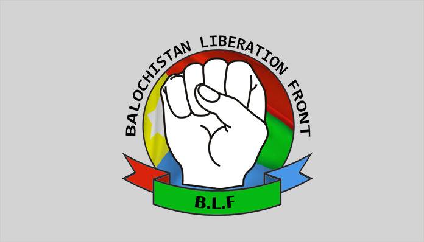
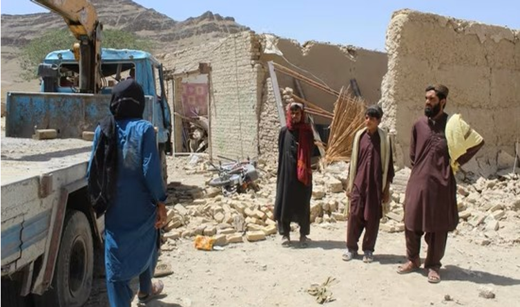
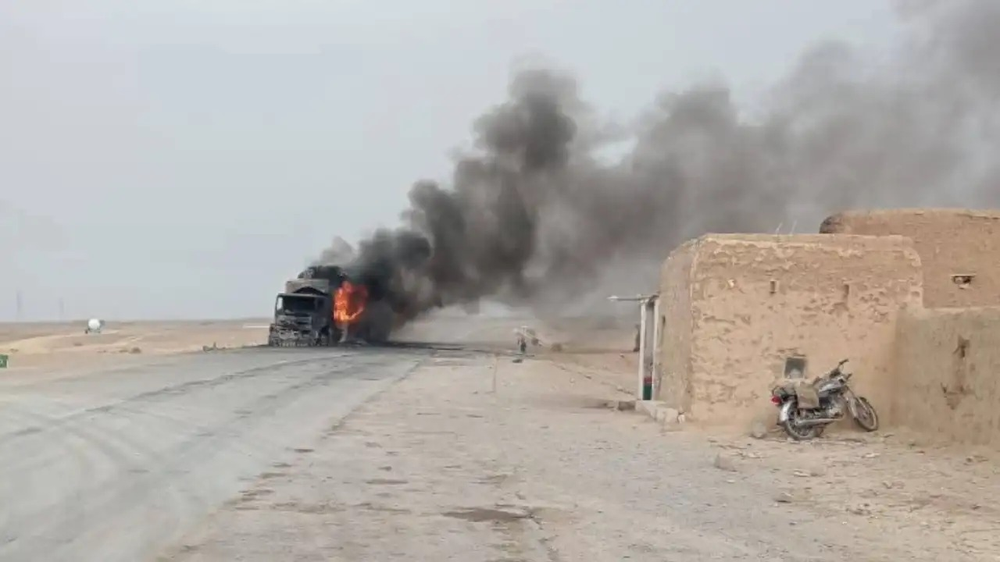
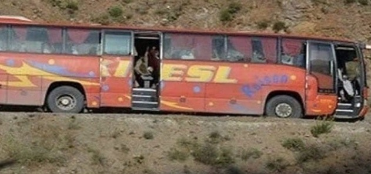
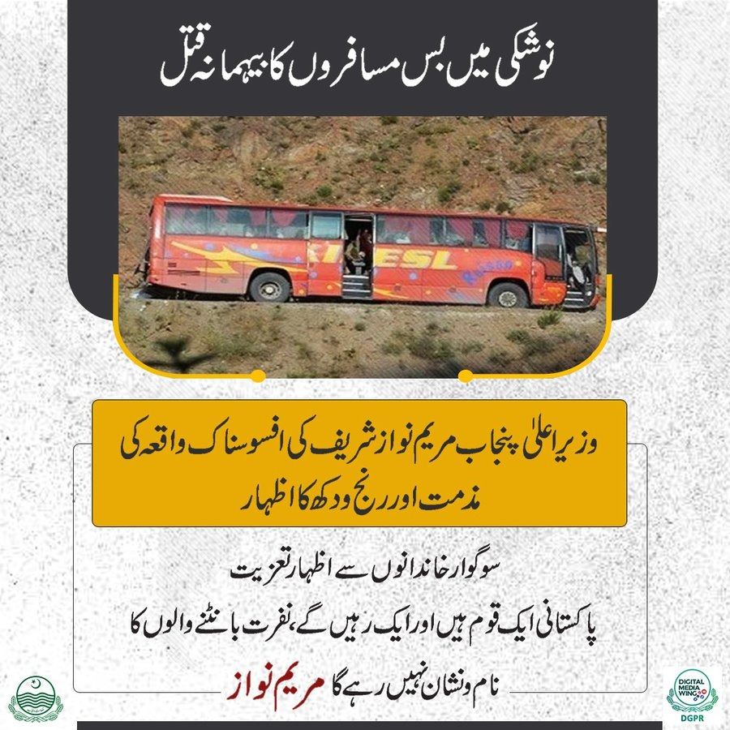
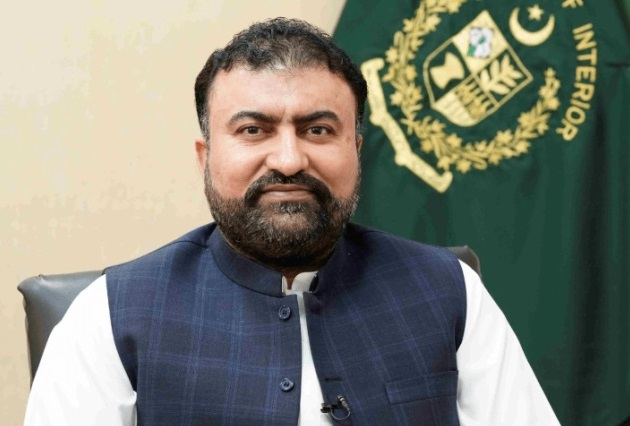
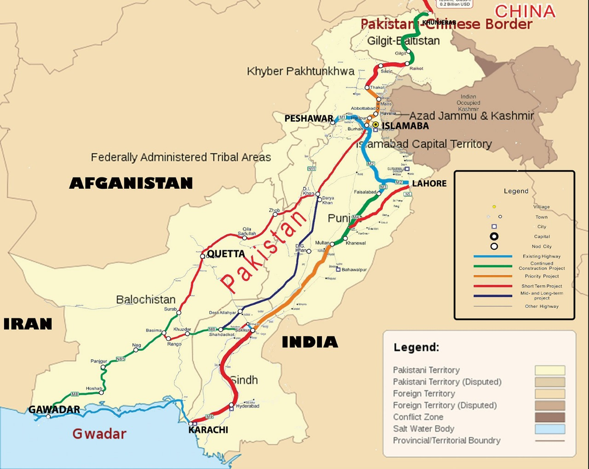
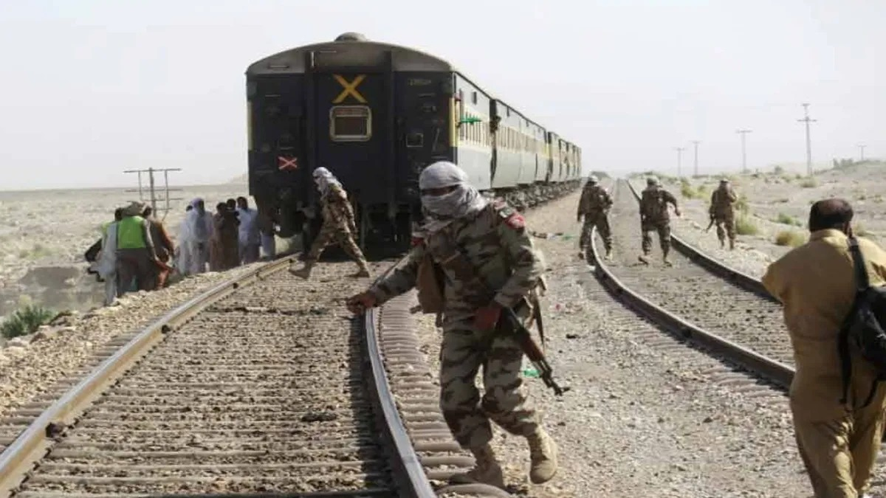
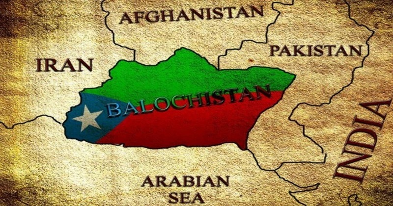

BLF claims Operation Baam to have shaken Balochistan through more than 70 coordinated attacks

By: Manish Kumar Date: 11 Jul 2025
This is one of the largest insurgent attacks on Pakistan in years and the Balochistan Liberation Front (BLF) said it was behind more than 70 coordinated attacks under an operation nicknamed Baam hitting the infrastructure, security forces and even the CPEC corridor.

Ever since the commencement of “Operation Baam,” the BLF has taken responsibility and committed around 70 attacks in the region.
Who is BLF?
The Balochistan Liberation Front (Balochi: بلۏچستان آجوییءِ سنگر; BLF) is an Afghanistan-based Baloch ethnonationalist separatist group actively engaged in the Balochistan region of Southwestern Asia. The group seeks independence for Balochistan and has been involved in various armed conflicts and insurgent activities in the region.

Approximately 70 attacks have been launched in the Balochistan and other provinces in Pakistan a few days after the Baloch Liberation Front (BLF) declared the emergence of their operation dubbed as the “Operation Baam.”

The Balochistan Liberation Front (BLF) has announced the launch of 'Operation Baam'
On July 8, Balochistan Liberation Front claimed that it had begun Operation Baam. The BLF has since then taken responsibility of the 70 attacks in the region.
According to a press release served by the Balochistan Liberation Front, “Major Gwahram Baloch,” spokesman of the BLF, the Balochistan Liberation Front declared that 80 percent of the goals of the current military campaign, Operation Baam, are achieved.
At earlier hours of Friday, in Punjab, nine passengers were kidnapped on the buses heading to Punjab and gunmen executed them. Although no group has yet taken responsibility of the attack the Pakistani government has claimed that the group to have carried it out is the Fitna al-Hindustan.
 Click the above picture to learn more

Picture of the bus from which passengers were offloaded in Noshki before being killed. — Government of Punjab X
The motivation behind the agreement remains unknown. The transaction may either address India's expanding trade deficit with the United States given upcoming reciprocal tariffs or establish new strategic military partnerships. The discussions held between the two sides during the meeting remain undisclosed. The pace of rapid Indo-US defence relations development becomes increasingly apparent.
Although no organization has yet had taken the responsibility of the attack, the Pakistani government has accused the Fitna al-Hindustan.
Balochistan chief minister Mir Sarfaraz Bugti swore that there will be no mercy towards the terrorists who were behind the attack.

CM Bugti told Geo News that: “We will smash all terror designs in its full force with absolute determination and in absolute unity”.
“Terrorists will be addressed forcefully. Innocent people will be avenged through their blood. An official statement by the office of ‘Prime Minister Shehbaz Sharif’, We will deal with this menace of terrorism with determination, cohesion, as well as resilience and root it out once and for all.”
What is operation Baam?
Operation Dawn or operation Baam is a set of operations that were announced by the Baloch Liberation Front on July 8. According to the formal declaration by the BLF, the operation is set to become a new day in the Baloch national liberation war. Spanning the Makran section of the coast right to the mountain village of Koh-e-Suleman, the BLF has pledged an array of "coordinated and multifaceted" assaults on the enemy.
The purpose of the Operation Baam is to show that the fighters of Baloch can conduct large-scale synchronised operations at geography said Major Gwahram, when he announced the operation.
Production of the Su-57 began in 2022 even though this aircraft serves as Russia's advanced stealth fighter program. Also, the development process and an aircraft accident in 2019 caused delays within the production timeline.
This is also the most wide-ranging offensives of the BLF in recent years as the operation proceeds.
4 days 70 attacks
The BLF reporting responsibility of 17 attacks within a couple of hours of launch of the Operation in Panjgur, Surab, Kech and Kharan.
Nonetheless, due to the recent kidnapping and murdering, the overall number of attacks reached 70.
To date, more than 70 coordinated attacks have been conducted around Balochistan, through this operation. In this strategic action, Baloch Sarmachars (freedom fighters) have hit the state infrastructure, security forces and the economic interests of Pakistan".
The BLF has been conducting attacks across the region that have shut down connectivity, train services and have also been deliberate in the attempt to block major sections of the China-Pakistan Economic Corridor (CPEC) that is a major component of the Chinese Belt and Road Initiative.
 Click the above picture to learn more about CPEC
Five people were wounded in an incident of a grenade attack a day ahead of kidnapping and killing of nine passengers in Balochistan, in Tubat area of the region. Another attack by the forces of BLF was on a police check post in Sibi.
In the run up to the declaring of the Operation, Pakistan has also experienced runs of forced abductions in the northwestern parts and Balochistan. There were several abductions of the students and journalists especially in Sindh and Karachi.
One of the other major BLF attacks was in March 2025 when a train (Jaffar Express) in Quetta with approximate 400 people on board was hijacked by a group of insurgents. The hijacking resulted in 33 members of the BLF and 64 people killed in total through the whole ordeal of the rescue operations.

Jaffar Express attack
What is the goal of BLF of the operation?
Leading on the right of the Balochistan to autonomy has been the Baloch Liberation Front. The separatist group was established in the year 1964 and has accused Pakistan of taking advantage of the region and deriving its resources and depriving the region of any fundamental rights and independence.
Balochistan became an independent state after breaking off with the British India. Nevertheless, the entire region was merged with Pakistan in 1948 following the partition.
The Baloch people have been demanding their liberation against Pakistan in decades. In May 2025, nationalist leaders in the province cited decades of violence, forced kidnapping and human rights abuses and tried to rally the provincial demands to independence and asked the United Nations to support the state of Balochistan with the status as the Republic of Balochistan.

#OperationBaam #BLF #BalochistanAttacks #BalochLiberationFront #PakistanCrisis #CPECUnderAttack
#BalochConflict #TerrorismInPakistan #SouthAsiaTensions #BalochistanNews #JaffarExpressHijack
#SulaimanMountains #FreedomFighters #PakArmyVsBLF #GeoPoliticsBalochistan